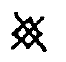
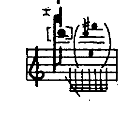
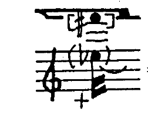

A combination of space- and conventional rhythm notation. The beat- and barlines represent the units of time (usually seconds). The density and distances on the page correspond to density and distance in time. The rhythms are also notated conventionally, so as to assure a certain precision, especially in the longer pauses. Only the longest general pauses are grouped together (indicated by a number of seconds or measures). Actions which remain the same for more than one measure are, where difficult to represent in conventional pitch-notation, are represented by duration lines that extend across the bars; I have refrained from notating the duration values in full measures. If such actions do not end at a barline, then their precise duration is expressed through a duration value or through the subsequent rest values.
To avoid the constant use of clef changes and ledger lines, a single instrument will occasionally be shown on two staves:
| = two octaves higher |
sometimes there's also = one octave higher.
Besides conventional pitches one also encounters the following symbols:
| = approximate pitch, the larger the x, the wider the tolerance. | |
| = high (relative to the indicated string); very high; as high as possbile given arco pos. ord.; as high as possible given arco extr. sul pont. (fingering directly next to the hair of the bow) | |
| = fingering which does not reflect the sounding result | |
|
= sounding result which does not correspond to the given fingering |
|
= touch the string lightly as if executing a harmonic |
These symbols appear in a great variety of combinations along with others still to be named. For the purpose of unifying this notation system, artificial harmonics will always look as follows:
 |
= string indication (occasionally superfluous) and resulting sound = lightly touched node = firm fingering |
| If space permits next to the fingering and the use of two staves was unwarranted, sounding results are often appended in parentheses. | |
| = natural harmonics, notated as usual, with the string indicated when necessary. | |
| = approximate pitch, touched lightly. often serves only to hinder normal sound production or to prevent the relevant string from producing sympathetic vibrations. | |
| = start and end of the area in which a given fingering applies | |
 |
= the fingering is applicable again following a brief interruption |
| = behind the bridge (in this case, on the A-string); playing two adjacent strings simultaneously behind the bridge (here the D- and A-strings). | |
 |
= in the tuning box (pizz.). The use of a guitar plectrum is recommended. The intention is short, dry snapping noises with a variety of timbres (as well as very quiet resonance of the instrument, whereas the open strings should be dampened), not necessarily pitch differences that would correlate with the given strings. It may well be that IV in the tuning box sounds higher than III due to the shorter distance to the tuning peg, assuming that the strings are not crossed over. However, the prescribed strings are not arbitrary; they determine (due to the different thicknesses of the strings) differing degrees of noisiness, and, on each string, recognizably identical results. |
 |
actions which take place elsewhere than the strings, e.g., bowing on the edge of the faceplate ('zarge') or audible breathing. |
 |
"doppelzarge", bowing both the edge of the faceplate and the backplate. |
 |
Bow as clef: battuto actions on the faceplate edge with the bowhair produces different pitches between the tip and about the middle of the bow. The closer to the tip, the higher the pitch. |
| 45° | = bow the string at an angle of 45° or more. On the open string or in lower registers the 4th partial would be the result. In this context, however, this bowing technique is always combined with a damping by the left hand, so as to achieve breath=-like sounds in a variety of timbres. |
| steg 45° |
= the same bowing technique on the bridge (again suppressing the resonance of the strings). combined with  (see below) the result is a shrill squealing. (see below) the result is a shrill squealing. |
| batt. | = struck with the bow hair, with no up- or downstroke whatsoever. |
| c. l. batt. |
= the same, col legno |
| = degrees of excess bow pressure. The rightmost symbol indicates that the fingered pitch is only barely discernible. | |
|
= extreme bow pressure, rattling sound; the fingered pitch is no longer discernible. |
 |
= continually increasing bow pressure |
 |
= continually decreasing bow pressure |
 |
= together with battuto: press-and-hold-effect |
 |
= allow the string to be pulled out of position by bow pressure. after the string snaps back, the segment of the string behind the bow will reverberate. |
 |
at the end of a duration, the bow makes a sudden halt, maintaining constant bow pressure. |
 |
= maintain bow pressure through the pause |
 |
= a rolling, circling motion of the bow. In combination with  and the result is a varied rattling and crunching. |
 |
= an abrupt, brief arco with excess bow pressure. The result is a rattling with a predetermined pitch content, that doesn't correspond to the lightly fingered pitch. Intended are the differences between the strings, the finger positions , and the bow locations , not the pitch content. |
all pressure-sounds are meant not as 'expression', not brutal or violent, but rather technical/instrumental, as 'concrete sounds', as the sound material of absolute music without a programmatic content. The loveliest results (always deep and rattling, not high and squeaky) can be achieved through a carefully heard, judiciously balanced relationship between bow length, bow direction and pressure (not too high), and by bowing closer to the fingerboard than usual.
| = without up- or downbow | |
| = without pressure of the bow (cf. Lachenmann's idea of flautando) | |
| = lift the bow and the finger (the latter perhaps even a bit prematurely) at the high point of the crescendo (with a fast and accelerating bow), so that the harmonic and other incidental resonance of the open strings can reverberate well. | |
| = audible dampening using the wood of the bow (or occasionally with the fingernail) |
| = using the left hand | |
| = bartók pizz (string snaps against the fingerboard) | |
| = with the fingernail (or, if this is unpleasant, the following) | |
| = with a guitar plectrum | |
| = arpeggio in the direction of the arrow | |
| = left hand fingering using the fingernail (for very high pizz.) |
| = hammer-on the left-hand finger (no bow) | |
| = noise produced on the winding of the string, using the fingertip or fingernail as indicated in the specific cases (also col legno from time to time) | |
| suddenly damp the strings with the hand, on a rhythmic value or as a grace-note after the beat |
| = inaudble | |
| begin inaudibly | |
| end inaudibly | |
| the pause should be imagined as actively articulated (as opposed to passive silence) |
..generally only apply to individual pitches; no natural signs, not even within the same measure (except as a reminder). In the case of tied notes the accidental will be repeated.
| = lower by 1/4-, 1/2- and 3/4-tone | |
| = raise by 1/4-, 1/2- and 3/4-tone | |
| harmonics which (as e.g., 7th, 11th, or 13th partial) are microtonally divergent are represented with a parenthesized accidental in ossia size. In this case, a harmonic f# as the 13th partial on the A-string, noticeably flat. The noisiness of such distant partial is intentional. |
if the right and left hand have rhythmically independent parts (e.g., I, m 82), then the right hand has stems up, the left hand stems down.
| = contact point of the bow (or the wood of the bow) on the string at a specific point | |
| = the same on two strings at a time |
Through bow contact against the string, potentially three different tones can sound simultaneously. E.g., by col legno battuto: the empy string or ordinary fingered pitch, as well as string segments above and below the contact point. If only the struck (contact-point-determined) pitch is meant to sound, then the string segment below the contact points will be damped through light touch at an indeterminate point (). Examples:
| = The lower part of the string is damped, so that only the pitch contacted by the wood of the bow can be heard. | |
 |
= If the bow is held against the string after the moment of contact, then both segments of the string will sound, though the struck tone itself will be somewhat louder than the complement. |
|  | = If the battuto is repeated (saltato), or if the saltato is only suggested in that the bow pressure is not clearly maintained after the attack, then the open string or the ordinary fingering can also be clearly heard. |
This is in principle true for col legno tratto with light bow pressure and for arco ordinario with extremely light bow pressure.
| = pizzicato on a string contacted by the bow. The location of the pizz (namely below the bow position) can be read from the resulant note in parenthesis. | |
|  |
= pizzicato above the contacting bow. This symbol is used when the pizzicato location cannot be determined by the indicated resultant pitch, because both possibilities would produce the same pitch but the string segment on the bridge side is preferred for timbral reasons. Here, a light touch and subsequent poco glissando with the wood of the bow is indicated. The result is two slightly divergent pitches, and then ring-modulation-like, contrary motion microglissandos with the charater of natural harmonics. |
| = double-pizzicato above and below the contacting bow using the left hand. Since it's practically impossible to divide the string exactly into halves because the space occupied by the bow will shift with the slightest disturbance, there will be beatings (i.e., microintervals) | |
| = first a gentle contact (chirping sound), then a firm contact with the wood of the bow (resulting in a specific pitch) on the already resonating string (due to a prior pizz). | |
| = wood of the bow is placed gently enough on the string that it passively bounces col legno battuto saltato after a pizz. When the amplitude of the string gradually decreases or the bow pressure is slightly increased, then after a chirping damping sound the pitch at the point of contact will sound. |
| = audible breathing | |
| = inhalation; exhalation | |
| = mouth shape. In this case: half=open e in the middle of the tongue, i.e., a 'schwa' | |
| = breath vowel. in this case, a forward, bright a, as in "father" | |
| = unvoiced | |
| = tempo is not prescribed, but finish with an exhalation |
| = generic indication of a transition | |
| = caesura | |
| = slightly longer caesura | |
| = maintain playing tension prior to the caesura |